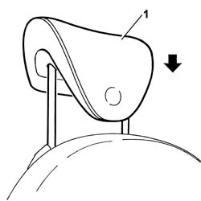

7045B10 l/h or r/h front seat HEAD RESTRAINT - r+r
- Path
- Procedures > 70 FITTINGS > 7045 FRONT SEATS > 7045B FRONT SEATS HEAD RESTRAINT/ARMREST > 7045B10 l/h or r/h front seat HEAD RESTRAINT - r+r
- Kind
- repair procedure (removal / refitting; the operation number is the code)
- Applies to
- all engines; all production periods
- Interactive page
- https://sloeber94.github.io/elrnDB-lThss/en/#/80564
Applies to: all engines; all production periods
 Removing
Removing
 Refitting
Refitting1. Raise the head restraint until it is in the end of travel position.
- Release the head restraint from the housing and remove it.
Applies to: all engines; all production periods
Refitting
Removing1. Fit the head restraint, inserting the pins in the bushes positioned on the backrest.
